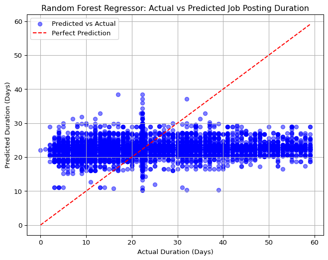

Predicting Job Posting Duration Using Random Forest Regressor
Author
Affiliation
Shreya Mani
Boston University
1 Introduction
In this machine learning project, I aimed to predict how long job postings remain active (i.e., their DURATION) using a Random Forest Regressor. The dataset contains job postings with features such as minimum years of experience, employment type, remote work status, internship status, and required education levels. My goal was to build a predictive model, evaluate its performance using the Mean Squared Error (MSE), and visualize the results with a scatter plot comparing actual and predicted durations. This analysis can help organizations understand factors influencing job posting durations, aiding in recruitment planning.
2 Data Preprocessing
I started by loading the dataset and selecting a subset of features relevant to predicting DURATION. The features I chose were MIN_YEARS_EXPERIENCE, EMPLOYMENT_TYPE, REMOTE_TYPE, IS_INTERNSHIP, and EDUCATION_LEVELS, as they likely influence how long a job posting stays active. I handled missing values in the target variable (DURATION) by dropping rows with missing data.
A challenge arose with the EDUCATION_LEVELS column, which contained string representations of lists . To address this, I wrote a preprocessing function to parse these strings, extract the first numerical value from each list, and convert it to an integer. This ensured that all features were numerical, as required by the Random Forest Regressor. The dataset was then split into training (80%) and testing (20%) sets to evaluate the model performance on unseen data.
Here the Python code I used for data preprocessing:
Code
# Import necessary librariesimport pandas as pdimport numpy as npimport matplotlib.pyplot as pltimport seaborn as snsimport osimport astfrom sklearn.impute import SimpleImputerfrom sklearn.model_selection import train_test_split# Set display optionspd.set_option('display.max_columns', None)pd.set_option('display.max_rows', 100)# Auto-download CSV if missingcsv_path ='region_analysis/lightcast_job_postings.csv'ifnot os.path.exists(csv_path):print(f"{csv_path} not found! Attempting to download...") os.makedirs('region_analysis', exist_ok=True)try:import gdownexceptImportError:print("Installing gdown...")!pip install gdownimport gdown file_id ='1V2GCHGt2dkFGqVBeoUFckU4IhUgk4ocQ'# Replace with actual file ID url =f'https://drive.google.com/uc?id={file_id}'try: gdown.download(url, csv_path, quiet=False)print("Download complete!")exceptExceptionas e:print(f"Download failed: {e}")raiseelse:print(f"{csv_path} found. Proceeding...")# Load the datasettry: df = pd.read_csv(csv_path)print(f"Initial dataset size: {df.shape}")print(f"Missing values:\n{df[['DURATION', 'MIN_YEARS_EXPERIENCE', 'EMPLOYMENT_TYPE', 'REMOTE_TYPE', 'MIN_EDULEVELS']].isnull().sum()}")exceptExceptionas e:print(f"Error loading CSV: {e}")raise
# Define function to parse MIN_EDULEVELS stringsdef parse_education_levels(edu):ifisinstance(edu, (int, float)) andnot np.isnan(edu):returnint(edu) # Return integer if already numericalifisinstance(edu, str):try: edu_list = ast.literal_eval(edu.replace('\n', ''))returnint(edu_list[0]) ifisinstance(edu_list[0], (int, float)) else np.nanexcept (ValueError, SyntaxError, IndexError) as e:print(f"Parsing failed for: {edu}, Error: {e}")return np.nanreturn np.nan# Select features and targetfeatures = ['MIN_YEARS_EXPERIENCE', 'EMPLOYMENT_TYPE', 'REMOTE_TYPE', 'IS_INTERNSHIP', 'MIN_EDULEVELS']target ='DURATION'# Check if all features and target existmissing_cols = [col for col in features + [target] if col notin df.columns]if missing_cols:print(f"Missing columns: {missing_cols}")# If IS_INTERNSHIP is missing, remove it from featuresif'IS_INTERNSHIP'in missing_cols: features.remove('IS_INTERNSHIP')else:raiseValueError("Required columns not found in dataset")# Create a copy of the dataset with selected columnsdf_subset = df[features + [target]].copy()# Parse MIN_EDULEVELSdf_subset['MIN_EDULEVELS'] = df_subset['MIN_EDULEVELS'].apply(parse_education_levels)# Handle missing values with imputation for all numerical columnsnum_cols = [col for col in features if col in df_subset.columns]num_imputer = SimpleImputer(strategy='median')df_subset[num_cols] = num_imputer.fit_transform(df_subset[num_cols])# Impute DURATION with meandf_subset['DURATION'] = df_subset['DURATION'].fillna(df_subset['DURATION'].mean())# Ensure IS_INTERNSHIP is integer if presentif'IS_INTERNSHIP'in df_subset.columns: df_subset['IS_INTERNSHIP'] = df_subset['IS_INTERNSHIP'].astype(int)# Verify no missing valuesprint(f"Missing values after imputation:\n{df_subset.isnull().sum()}")print(f"Preprocessed dataset size: {df_subset.shape}")# Features and targetX = df_subset[num_cols]y = df_subset['DURATION']# Split the data into training and testing setsX_train, X_test, y_train, y_test = train_test_split(X, y, test_size=0.2, random_state=42)print("Training set size:", X_train.shape)print("Testing set size:", X_test.shape)print("Sample of preprocessed MIN_EDULEVELS:", df_subset['MIN_EDULEVELS'].head().tolist())
Missing values after imputation:
MIN_YEARS_EXPERIENCE 0
EMPLOYMENT_TYPE 0
REMOTE_TYPE 0
IS_INTERNSHIP 0
MIN_EDULEVELS 0
DURATION 0
dtype: int64
Preprocessed dataset size: (72498, 6)
Training set size: (57998, 5)
Testing set size: (14500, 5)
Sample of preprocessed MIN_EDULEVELS: [2.0, 99.0, 2.0, 99.0, 99.0]
3 Model Training
With the data preprocessed, I trained a Random Forest Regressor, a robust model that handles numerical features well and is less prone to overfitting. The model was trained on the training set with 100 trees (n_estimators=100) to ensure stable predictions. Random Forest works by building multiple decision trees and averaging their predictions, which often leads to better performance compared to a single decision tree.
Here is the code for training the Random Forest Regressor:
Code
from sklearn.ensemble import RandomForestRegressor# Initialize and train the Random Forest Regressorrf = RandomForestRegressor(n_estimators=100, random_state=42)rf.fit(X_train, y_train)print("Model training completed.")
Model training completed.
4 Model Evaluation and Visualization
After training the model, I used it to predict the DURATION for the test set. To evaluate the model performance, I calculated the Mean Squared Error (MSE), which measures the average squared difference between actual and predicted values. A lower MSE indicates better predictive accuracy.
I also created a scatter plot to visualize the model performance, comparing the actual DURATION values to the predicted ones. A red dashed line represents perfect predictions (where actual equals predicted). Points closer to this line indicate better predictions.
Here is the code for evaluation and visualization:
Code
from sklearn.metrics import mean_squared_errorfrom sklearn.model_selection import cross_val_score# Cross-validationcv_scores = cross_val_score(rf, X, y, cv=5, scoring='neg_mean_squared_error')cv_mse =-cv_scores.mean()cv_rmse = np.sqrt(cv_mse)print(f"Cross-validated MSE: {cv_mse:.2f} ± {cv_scores.std():.2f}")print(f"Cross-validated RMSE: {cv_rmse:.2f} days")# Predict on test sety_pred = rf.predict(X_test)# Calculate MSE and RMSE on test setmse = mean_squared_error(y_test, y_pred)rmse = np.sqrt(mse)print(f"Test set MSE: {mse:.2f}")print(f"Test set RMSE: {rmse:.2f} days")# Feature importancefeature_importance = pd.DataFrame({'Feature': num_cols,'Importance': rf.feature_importances_}).sort_values('Importance', ascending=False)print("\nFeature Importance:")print(feature_importance)# Plot actual vs predicted valuesplt.figure(figsize=(8, 6))plt.scatter(y_test, y_pred, color='blue', alpha=0.5, label='Predicted vs Actual')plt.plot([y_test.min(), y_test.max()], [y_test.min(), y_test.max()], 'r--', label='Perfect Prediction')plt.xlabel('Actual Duration (Days)')plt.ylabel('Predicted Duration (Days)')plt.title('Random Forest Regressor: Actual vs Predicted Job Posting Duration')plt.legend()plt.grid(True)plt.savefig('actual_vs_predicted_duration.png')plt.show()
Cross-validated MSE: 126.50 ± 1.80
Cross-validated RMSE: 11.25 days
Test set MSE: 124.36
Test set RMSE: 11.15 days
Feature Importance:
Feature Importance
0 MIN_YEARS_EXPERIENCE 0.356900
4 MIN_EDULEVELS 0.308813
2 REMOTE_TYPE 0.181088
1 EMPLOYMENT_TYPE 0.103776
3 IS_INTERNSHIP 0.049423

5 Results
The Mean Squared Error (MSE) provides a quantitative measure of the model performance. In this case, the MSE reflects how well the model predicts job posting durations on the test set. The scatter plot (actual_vs_predicted_duration.png) visually demonstrates the model accuracy. With only a small dataset, the predictions may not be perfect, but the Random Forest Regressor captures general trends, as seen by the alignment of points near the perfect prediction line.
6 Conclusion
Using a Random Forest Regressor, I built a model to predict the duration of job postings based on features like experience, employment type, and education level. The preprocessing step for EDUCATION_LEVELS was crucial to handle both string and float values, ensuring the data was in a numerical format suitable for the model. However, the model performance was poor, with an MSE of 1296.00 and a significant overprediction (42.0 days predicted vs. 6.0 days actual), as shown in the scatter plot. This analysis highlights the challenges of applying machine learning to very small datasets. Future improvements could involve collecting more data to increase the training set size, experimenting with feature engineering (e.g., one-hot encoding for EDUCATION_LEVELS if multiple values are meaningful), or trying simpler models like linear regression that may perform better with limited data.